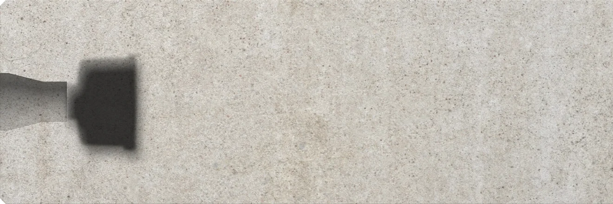
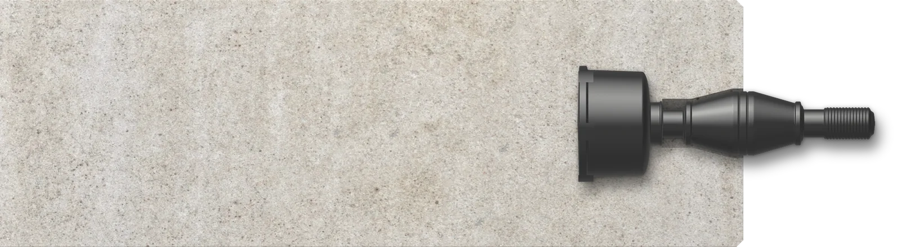
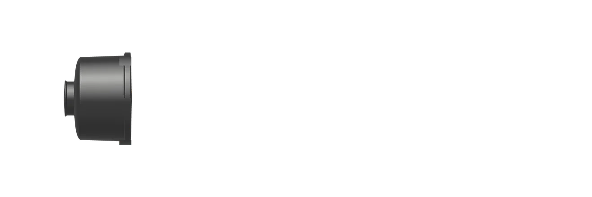
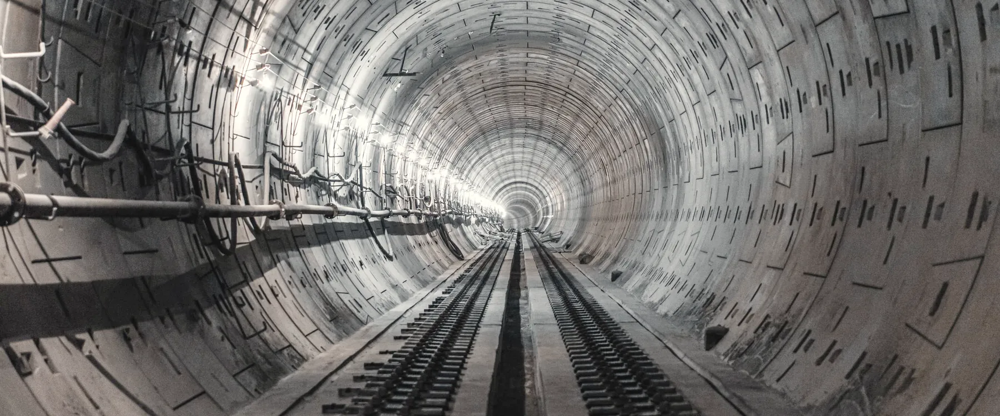
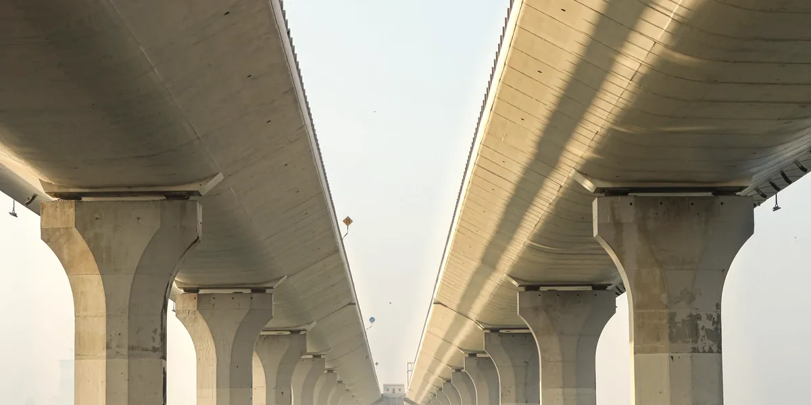
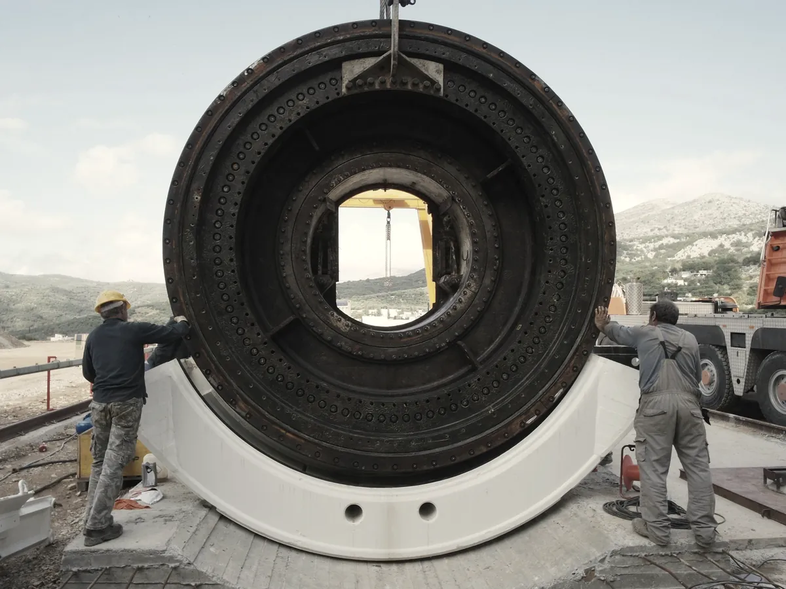

Sistemi di connessione per conci di galleria
Easy Click unisce e allinea i conci prefabbricati delle gallerie scavate con la fresa: due bussole, una per concio, e un perno che le aggancia a scatto.



Easy Click Smart in sezione tra due conci, ricostruito dai disegni tecnici Impreservice. Brevetto IT 1391815.
Entra senza fatica, tiene serrato e allineato
Le bussole stanno nei conci, il perno unisce un concio al vicino quando l'anello si chiude.

Galleria rivestita con anelli di conci prefabbricati. Le linee sottili sono i giunti.
Il perno si inserisce con poco sforzo e tiene il concio serrato e allineato a quello accanto. Il rivestimento in materiale composito dura a lungo e resiste alla corrosione e all'abrasione.
- Versioni
- Smart, Medium, Magnum
- Smart HD
- taglio fino a 480 kN
- Hybrid
- boccola L140 passo 5 mm da un lato, scatto dall'altro
- Brevetto
- IT 1391815, depositato il 29 ottobre 2008
Dal Brennero a Brisbane
Metropolitane, gallerie ferroviarie e stradali, condotte d'acqua: Easy Click è nei conci di 42 cantieri, dalla galleria di base del Brennero alla Legacy Way di Brisbane.
Italia 24
- BBT lato Italia Mules, Bolzano
- Metro blu Milano
- Metro linea 1 Napoli
- Nodo di Firenze
- Galleria del Catajo Padova
- Gran San Bernardo Aosta
Europa 8
- Metro Copenaghen
- HS2 Inghilterra
- Gran Metro Varsavia
- Metro linea 5 Bucarest
- S19 Tunel Polonia
- Condotta SM-BAM Belgio
Mondo 10
- Legacy Way Brisbane
- Tsuen Drainage Hong Kong
- El Alto Tunnel Panama
- Beni Haroun Algeria
- Tunnel Rio Lomas Buenos Aires
- Metro CPB J Holland Sydney

Giunti per ponti e viadotti
Fuori dalla galleria, gli impalcati: ricerca, produzione e posa dei giunti Sapjoint, con la membrana impermeabilizzante Sapeflex.
Conci attrezzati con tecnologia Easy Click
Via Serenissima 8/b, 36040 Grisignano di Zocco (VI)
Apri la mappa
Consegne in tutto il mondo, con tempi secondo quantità. Per i costi, scriveteci.
